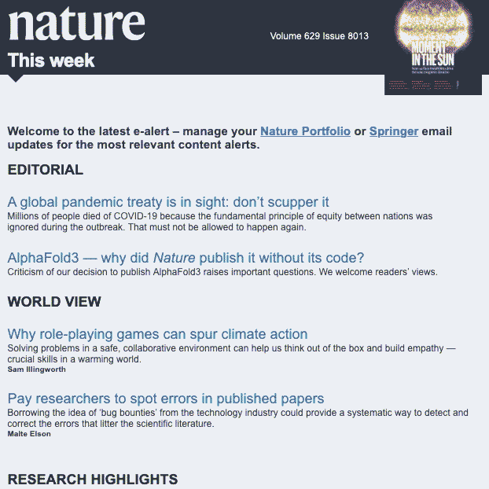
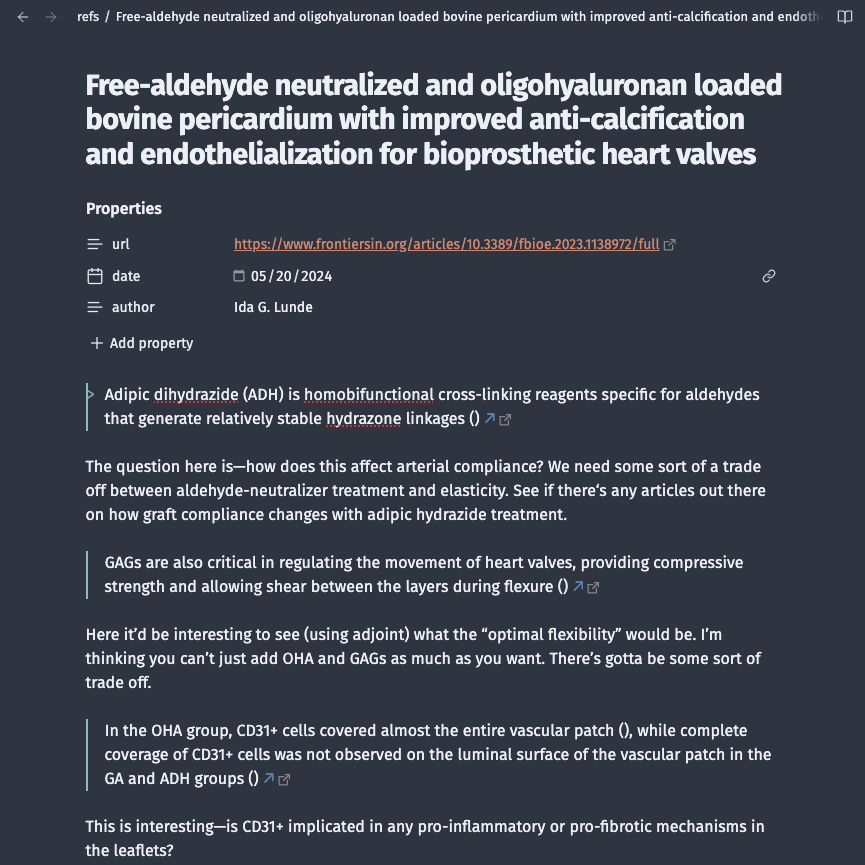
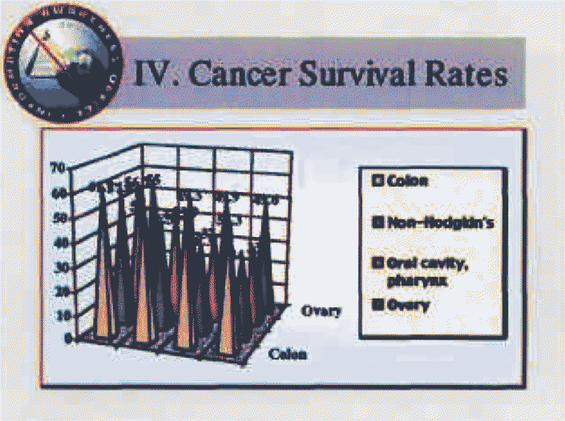

Creating a Standardized Workflow
Surya Sanjay
I like finding order in things; and when it’s not already there, I like to create order. However, my antipathy towards disorder doesn’t stem from a lack of familiarity or difficulty to process something without order. Rather, it’s when the disorder magnifies to a level where it has a palpable impact on efficiency that I have a strong urge to fix it.
I’ll make the abstraction clearer with an example. I decided to
change the font that I use in Terminal.app, MacOS’s
shell.
For those who don’t know what a shell is, worry not. It’ll be useful
in a later section of this post, and I’ll explain when it’s
necessary.
I had four requirements: (1) aesthetics, (2) readability, (3) diacritic
support,
This has no relevance to the post, but here’s a link
to an explanation. Essentially, it’s a mark that can be added to
letters to change the sound they make. For the linguistics research
I do, it’s extremely necessary for a font to be able to support
this.
and (4) a plethora of icons. Aesthetics and readability were the least
limiting criteria–there are lots of options for good monospace (i.e.
coding) fonts that look good. Having lots of icons, surprisingly, was
not that big of an issue, because the GitHub repo nerd-fonts has
a full list of them with the added capability of patching an existing
font with extra symbols. The hardest part turned out to be finding a
font with good diacritic support: I found one, but it fulfilled none of
the other categories. So then why not compromise? Qualities (1), (3) and
(4), in fact, are all contributors to readability, and anything that
compromises readability slows down my coding. So, I went out of my way
to find a really handy
tool to add diacritic support
to an aesthetic and readable font, and I used the patcher to add icons.
In essence, I created a new font:
A simple bash script for cancelling processes on a
(Slurm-managed) supercomputer. I included the Tamil text (“job # ...
is finished”) and icons to demonstrate diacritic and icon support.
for i in {27433477..27433993}; do
scancel $i
echo "vēlai eṇ ${i} muṭintāyiṟṟŭ " >> out.txt
done
Whereas this example is relatively trivial, optimizing the other various aspects of life can have a drastic impact on how much time you spend on them. This post will focus on optimizing one major process, which I will call the synthése: There very likely is a word for this. I and ChatGPT are working together to try and figure that out at the moment.
$\text{information} \xrightarrow{\text{read & listen}} \text{short-term storage}$
$\text{short-term storage} \xrightarrow{\text{understand}} \text{long-term storage}$
$\text{long-term storage} \xrightarrow{\text{apply}} \text{ideas & projects}$
$\text{ideas & projects} \xrightarrow{\text{work}} \text{presentations}$
Why Invest in a Productivity System?
I don’t believe in a one-size-fits-all model that some YouTubers push for. Don’t get me wrong–I really respect Ali Abdaal and other content creators out there for providing helpful tips to the masses. I used to follow their advice, but as time progressed, the more and more I realized that I needed a system that worked specifically for me and my interests. I believe each person has a system that fits their own needs. This post will present a model and only as a model to inspire new models.
That aside, everyone utilizes the synthése in one way, shape, or form. The information being processed and the ideas and projects that result, however, are what differ from person to person. For a film director, the information processed might be the critiques of their old films and outputted ideas may represent new ways to shot a scene. For a researcher, on the other hand, the information may be journal articles and the outputted ideas new experiments.
A productivity system relies on a very simple principle: let a machine do something for you, so you can invest your brain power in other places. So, a productivity system for a synthése would store information and ideas in a meaningful manner and automate any processes in between when possible. As an example of the latter, one friend of mine was trying to transfer all of her MS Word citations to Zotero, a bibliography management tool, and she was doing it by hand. She’d approached me for an unrelated question, but when I noticed this, I recommended she use ChatGPT to convert her citations to BibTeX and import that file directly into Zotero. A process that would’ve taken two hours was shortened to a span of fifteen minutes.
The question everyone must ask themselves before optimizing their synthése, then, is whether it is worth it. Depending on the needs of the synthése, the investment required for optimization might outweight the gained productivity. Further, some may be fully optimized and happy just using their brains. Definitely could not be me. But if that’s you, please reach out. I want to learn how to do that.
Information Storage
The main crux at this stage is to separate the useful content from the useless and place it in a location that’s convenient to access.
The main content that I digest is news articles and journal articles, the latter mainly focusing on clinical research, bioinformatics, and sporadically some basic science studies. I start by signing up for mail notifications when new articles appear, so they show up in my inbox. This way, I don’t have to remember to check for them. I have a macro that automatically labels them as ‘Reading’ and categorizes them in a separate folder in my inbox.
Then, whenever I check my email, I check to see which articles are interesting within those feeds.  My Feed from the Journal Nature. Today, I found the article on AlphaFold3, a protein structure prediction model, the most interesting. Next comes the largest challenge: I don’t have time to read all the time, but I’d like to be able to read some articles later. News apps already do this for you by keeping (and curating) a feed, but mixing uninteresting articles with interesting articles in your email inbox, as well as emails about others things, is a recipe for failure.
The best way around this–I’ve found–is to use a ‘read-it-later’ app, which stores article text and metadata in a feed, so you can–guess what–read it later. The app I use for this is Instapaper, which works like a wonder, embedded with various useful features, like annotation, AI summaries, and speed reading.
Information Processing
This is, by far, the most important aspect of my synthése system, and it is where most of the divergence from conventional productivity systems has taken place. To describe it entirely would take a few other blog posts, so I will keep it brief.
Much of my computer work is restricted to the shell, which is a bare-bones way to interact with your computer’s operating system without a fancy visualization. This is mainly because much of my research work is done on remote (super)computers, which don’t have GUIs (Graphical User Interfaces), and thus require me to use the shell. To edit text remotely, I use Vim, a text-processing software that you either hate or love. Being in the second category, I use Vim for absolutely everything: coding, taking notes, my to-do list, so on and so forth. Since Vim is not accessible through your cell phone, Technically it can be, by using an app called Termius and remotely logging into your laptop. I would recommend against this for something as trivial as accessing your to-do list. for about six months of my life, the only way to access my to-do list was through my laptop. And, while that was somewhat refreshing, it turned out to be a burden.
For taking notes and for my tasklist on Vim, I’d already been using a
plugin called vimwiki, which, amongst other things, allows
you to navigate between notes files very quickly. vimwiki
makes use of Markdown
files, which employ a very simple language that is used as a backend to
render user-facing variants of some webpages and apps.
In order to sync with my phone, I needed to find an app that would both make use of Markdown files and store these files on cloud. Surprisingly, Obsidian filled that role perfectly. The only caveat is that the cloud sync feature that they offer is a subscription feature only. However, I found a loophole, which is that Obsidian files are anyway stored on iCloud, meaning that they must be in some directory on my MacBook. They were (in the most random folder). With that, I could view my notes and to-do list on all my Apple devices.
But the benefits of Obsidian are not limited to just that. Obsidian integrates seamlessly with Instapaper, neatly storing and organizing notes into directories within your notes folder, making them very conveniently accessible. Not only that, the notes are organized next to the excerpts of text they highlight, with clickable links to locations within the article.  Obsidian-Instapaper Integration. Notes and article snippets are organized exactly how I need them to be.
Obsidian makes use of something called the Zettelkasten
system, which organizes notes into three categories: fleeting,
literature, and permanent. My system is similar, with one large
temp folder which contains unorganized notes until later
review, a ref folder which directly imports from
Instapaper, and an ideas folder which stores project ideas.
The main difference between my system and Zettelkasten is that, in
Zettelkasten, all ideas must derive from temp. In my
system, temp is just for storage. ideas is the
only important folder. Both can be edited without being informed by the
other and can be totally mutually exclusive.
The benefit of using a shell with Obsidian is the ability to edit
files quickly and search quickly, which would otherwise be difficult
with a GUI. Especially with a ref folder that fills up with
tons of useful articles that I sadly don’t remember, this is a must.
Ideation, Project Management, & Presentation
Ideation is the simplest part to automate, as no automation is necessary. We automated the rest of the system so that ideation could take up the majority of the work.
But there’s more to mention at this step: once you choose an idea to
work on, how do you optimize that process? I’ve tried and tested many
to-do list systems, and while mine might not be the most efficient, it
has stood the test of time for me. I use vimwiki for my
to-do list, and I simply organize each entry by due date, and further by
what project or class it is for. The important thing here is the method
by which I organize it, not the app I use: I put everything that
has a due date in my life–personal or professional–and organizing it all
on one page affords me with an impetus to get things done ahead of time.
71 ### 2024: 07-15
72
73 - [ ] [College]:
74 - [ ] Contact advisor re: audit
75 - [░] [Research]:
76 - [▒] Finish analysis work
77 - [ ] Start methods section (reference this)
78
79 +--- 9 lines: ### 2024: 07-20-----------------
Presenting the results of projects is something that may also be automated. Fortunately or unfortunately, restrictions are placed on how we can present things: we have to somehow simultaneously maximize content, aesthetics, and guidelines given by the forum we’re presenting in and the field we’re a part of. This is loosely adapted from the Illinois model.
When we’re given a strict format, whether we like how it looks or not, it is optimized, because there is no decision-making to be made aside from the content that needs to be presented. It is surprisingly the open-ended formats that affect the time taken to compose a document or presentation, because we have to take the time to de novo create a fitting aesthetic.
I used to create a new aesthetic each time, until I discovered MS Word and PowerPoint templates during my freshman year of college. However, Microsoft Office tools, though very versatile, are sometimes very clunky to use and don’t offer full customizability. So, I turned to the beast: $\rm{\LaTeX}$. $\rm{\LaTeX}$ is a powerful text-processing tool, which basically allows you to code text. In my opinion, there are two uses for $\rm{\LaTeX}$: (1) you use a lot of complex equations or chemical diagrams in your documents, and (2) you use the same formatting in all of your documents. If you fit into either category, I encourage you to try it out here.
$\rm{\LaTeX}$ is great, and it allowed me to create templates for
every type of document I could think of. Not to mention, there is great
integration between Vim and vimtex (check out
Elijan Mastnak’s great tutorial here)
that make its speed rival and, perhaps, surpass Microsoft Office.
But I found myself customizing
so much that the benefits didn’t outweigh the time invested into
creating templates for myself...
Recently, I discovered the writings of Edward Tufte, a man known for his work in data visualization and presentation. He’s famous for his complete roast on using slides. Though I believe his ideas on slides to be outdated, There have been clear improvements in slideshow design since 2003, when he wrote his article (see below–image accessed from Tufte 2003). I agree with him that slides are not used the way they should be, though.  his indefatigable use of handouts inspired me. His design aesthetic and attention to detail (which inspired this website!) also intrigued me, and I’ve adapted it to my own liking. Luckily, there are $\rm{\LaTeX}$ templates that follow his style, so they didn’t require much modification.
So, my optimal presentation strategy fell into place, partly due to the influence of a critique of Tufte’s article. Doumont 2005. The Cognitive Style of PowerPoint: Slides Are Not All Evil. For any project, the most basic concrete deliverable is a presentation, in order to communicate findings. Presentations should be concise, however, to keep the attention of a tired and yawning audience, so information can only be included selectively in a presentation. Even less should be included in slides.
Whereas some presentations lead to write-ups or publications, others don’t warrant them. However, there is a need to completely document the project, both in order to properly prepare talking points for a presentation, and to allow interested audience members a further read. And the handout fills that role.
How, then, do we differentiate the use of a slideshow and that of a handout? My recommendation is to always use slides and use handouts when necessary (i.e. if the audience will care enough to see the data that warrant your conclusions). If you use both a handout and a slide deck, include a link to the handout in a QR code in the first slide and the last slide (for audience members who want to view the handout during and after the presentation, respectively). In the slides, include very little text–only the main interpretation of a figure. The star of the show should be the figure and your verbal description of it, not the words on the screen.
In saying all of that, I have optimized the process of creating
presentations and the act of presenting, as well. A link to a PDF of my
handout template can be found below;
Note that this is basically the same as the template given in the
tufte-latex
package documentation, with some minor changes, like the font style
used, the color of the text, etc. All credits go to the authors for
creating this amazing and convenient resource.
to make your own, just load the
tufte-latex
package and change the settings however you like.
handout.pdf
Final Thoughts
The purpose of this post was to justify and describe the thinking process behind optimizing one’s synthése. Hopefully, you gained something out of reading this (long) article. If you have any questions or comments on this post, feel free to reach out to me via email (here).
Navigation
Built using tufte-css and the
Nord palette.